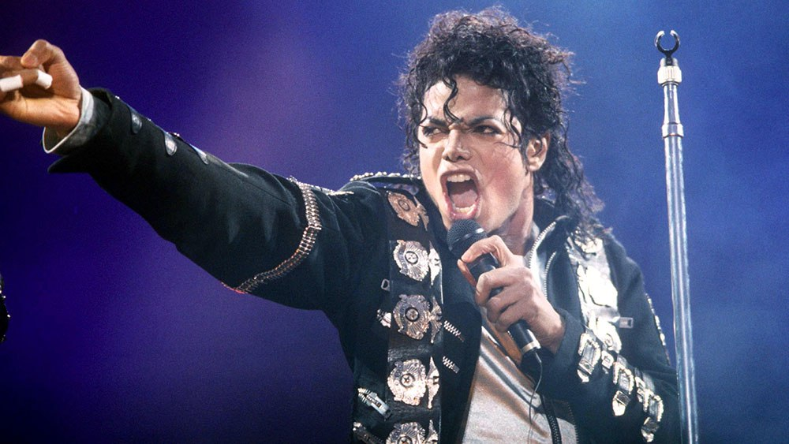

Queen
Queen es una banda británica de rock formada en 1970 en Londres por el cantante Freddie Mercury, el guitarrista Brian May, el baterista Roger Taylor y el bajista John Deacon. Si bien el grupo ha presentado bajas de dos de sus miembros (Mercury, fallecido en 1991, y Deacon, retirado en 1997), los integrantes restantes, May y Taylor, continúan trabajando bajo el nombre Queen, por lo que la banda aún es considerada activa.
El grupo gozó de un gran éxito en el Reino Unido con álbumes como Sheer Heart Attack (1974) y A Night at the Opera (1975). Este último llamó la atención internacionalmente, en especial por el sencillo "Bohemian Rhapsody", y colocó a Queen en un primer plano de la escena musical. Tuvieron una significativa repercusión en Estados Unidos a finales de los años 1970, ya con un numeroso repertorio de éxitos.5 A nivel artístico, se ha destacado su diversidad musical, sus arreglos en múltiples capas y sus armonías vocales. Es considerada una banda de gran influencia en el desarrollo del hard rock y el heavy metal, incorporando elementos del glam rock, rock progresivo, folk, blues y pop. Fue una de las primeras agrupaciones musicales en hacer de sus conciertos espectáculos muy vistosos mediante el uso bombas de humo, flashpots o innovadores sistemas de luces móviles, además de promover la participación del público en los mismos, contribuyendo así al auge del arena rock.6 La crítica ha señalado el carisma de Freddie Mercury como una parte fundamental de sus presentaciones.7 A este respecto, habitualmente se han reconocido actuaciones como las del Live Aid en 1985 o el concierto del estadio de Wembley en 1986 como dos de los mejores recitales de rock de la historia.8910 Aunque el cuarteto normalmente gozó de una gran popularidad y éxito comercial, en su momento una parte de la crítica no les tomó en serio, como por ejemplo cuando en la publicación Rolling Stone se criticó el álbum Jazz llamándolo "fascista"

Michael Jackson
Michael Joseph Jackson (Gary, Indiana, 29 de agosto de 1958-Los Ángeles, California, 25 de junio de 2009) fue un cantante, compositor, productor discográfico, bailarín, actor y filántropo estadounidense. Conocido como el «Rey del Pop», sus contribuciones y reconocimiento en la historia de la música y el baile, así como su publicitada vida personal, lo convirtieron en una figura internacional en la cultura popular durante más de cuatro décadas. Es reconocido como la estrella de música pop más exitosa en el mundo. Sin embargo, su música incluyó una amplia acepción de subgéneros como el rhythm and blues (soul y funk), rock, disco y dance.
Comenzó su carrera artística a mediados de los años 1960 en la agrupación musical The Jackson, en la cual publicó, junto con algunos de sus hermanos, diez álbumes hasta 1975. En 1971 inició su carrera como solista, aunque siguió perteneciendo al grupo. A principios de la década de 1980, Jackson se convirtió en una figura dominante en la música popular. Sus vídeos musicales, entre los que se destacan «Beat It», «Billie Jean» y «Thriller», de su álbum de 1982 Thriller, son acreditados como una ruptura de las barreras raciales y la transformación del medio en una forma de arte y herramienta promocional. La popularidad de estos ayudó a llevar a la cadena televisiva MTV a la fama. El álbum Bad (1987) produjo el número uno de los sencillos «I Just Can't Stop Loving You», «Bad», «The Way You Make Me Feel», «Man in the Mirror» y «Dirty Diana» en el Billboard Hot 100, por lo que se convirtió en el primer álbum en tener cinco sencillos número uno en ese ranking. Continuó innovando con vídeos como «Black or White» y «Scream» a lo largo de la década de 1990, y forjó una reputación como artista solista en varias giras. A través de sus presentaciones en escena y en vídeo, Jackson popularizó una serie de técnicas de danza complicadas, como el robot y el moonwalk, a las que dio el nombre. Su sonido y estilo distintivos han influido en numerosos artistas de diversos géneros musicales.
